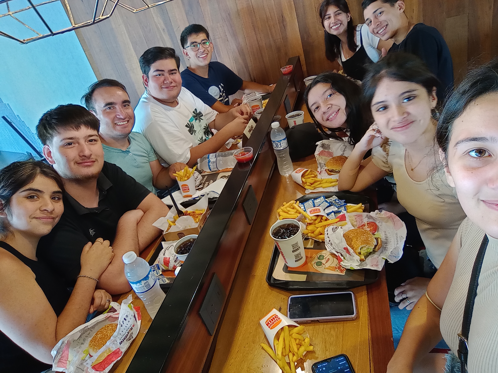
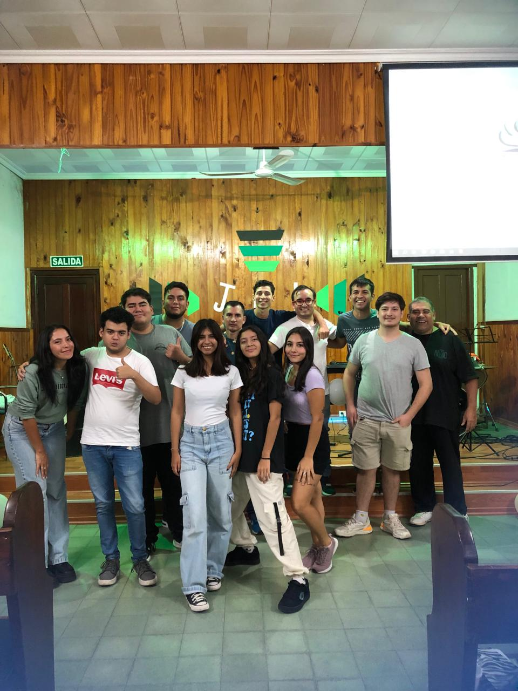
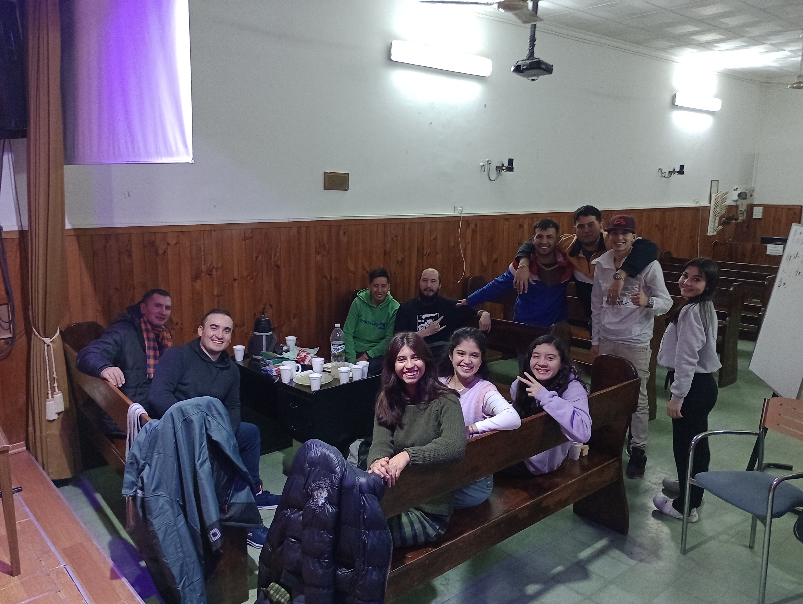

Vida de la Jni
¡Bienvenidos a la página oficial de la JNI VICTORIA! Somos un grupo de jóvenes comprometidos con Dios y con el deseo de hacer una diferencia en nuestro barrio y en el mundo que nos rodea. Nuestra misión es clara: amar a Dios, crecer juntos en fe y alcanzar a otros jóvenes con el mensaje transformador del Evangelio.
Nos reunimos cada sábado por la noche para compartir momentos de compañerismo y participar en una variedad de actividades que van desde estudios bíblicos dinámicos hasta noches de juegos divertidos. Creemos en la importancia de fortalecer nuestras relaciones con Dios y entre nosotros mientras nos divertimos y aprendemos juntos.
Nuestros objetivos son simples pero poderosos: deseamos profundizar en nuestro amor y búsqueda de Dios, permitiendo que Su Espíritu nos guíe en todo lo que hacemos. Como jóvenes, entendemos las dificultades y desafíos que enfrentamos en el mundo actual, pero confiamos en que, a través del poder del Espíritu Santo, podemos superar cualquier obstáculo y vivir vidas que reflejen la luz de Cristo.
Como dice el libro de Joel 2:28, "Y después de esto derramaré mi Espíritu sobre toda carne, y profetizarán vuestros hijos y vuestras hijas; vuestros ancianos soñarán sueños, y vuestros jóvenes verán visiones". Creemos firmemente en esta promesa y nos esforzamos por vivir vidas llenas del Espíritu, listos para seguir los sueños y visiones que Dios tiene para nosotros.